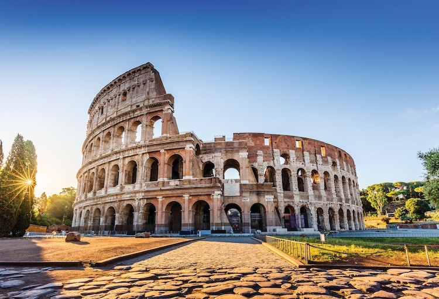

Gran Piramide de Guiza

La Gran Pirámide de Guiza (también conocida como pirámide de Keops o de Jufu) es, además de la mayor de las pirámides de Egipto, la más antigua de las siete maravillas del mundo y la única que aún perdura. Fue ordenada construir por el faraón Keops de la cuarta dinastía del Antiguo Egipto. Acerca del arquitecto de dicha obra algunos estudiosos nombran a Hemiunu. Pero no está comprobado. La fecha estimada de terminación de la construcción de la Gran Pirámide es alrededor de 2570 a. C., siendo la primera y mayor de las tres grandes pirámides de la Necrópolis de Guiza, situada en las afueras de El Cairo, en Egipto. Fue el edificio más alto de la Tierra durante 3800 años, hasta que en el siglo XIV fue superado por el chapitel de la Catedral de Lincoln, en Inglaterra, y el edificio de piedra más alto del mundo hasta bien entrado el siglo XIX, siendo entonces superado por la aguja de la iglesia de San Nikolai, en Hamburgo. La pirámide fue realizada a lo largo de 20 años y erigida con 2.300.000 bloques de piedra de aproximadamente dos toneladas por bloque aunque algunos bloques alcanzaban las 60 toneladas.
El Coliseo de Roma
 El Coliseo o Anfiteatro Flavio es un anfiteatro de la época del Imperio romano, construido en el siglo I y ubicado en el centro de la ciudad de Roma. Su denominación original, Anfiteatro Flavio, hace referencia a la dinastía Flavia de emperadores que lo construyó; su nombre posterior, Coliseo, y por el que es más conocido en la actualidad, se debe a una gran estatua que había cerca, el Coloso de Nerón, que no ha llegado hasta nosotros. Por su conservación e historia, el Coliseo es uno de los monumentos más famosos de la Antigüedad clásica. Fue declarado Patrimonio de la Humanidad en 1980 por la Unesco y una de Las Nuevas Siete Maravillas del Mundo Moderno el 7 de julio de 2007. El Coliseo se usó durante casi 500 años, celebrándose en él los últimos juegos de la historia en el siglo VI, bastante más tarde de la tradicional fecha de la caída del Imperio romano de Occidente en 476 d. C. Los bizantinos también lo utilizaron durante el siglo VI.